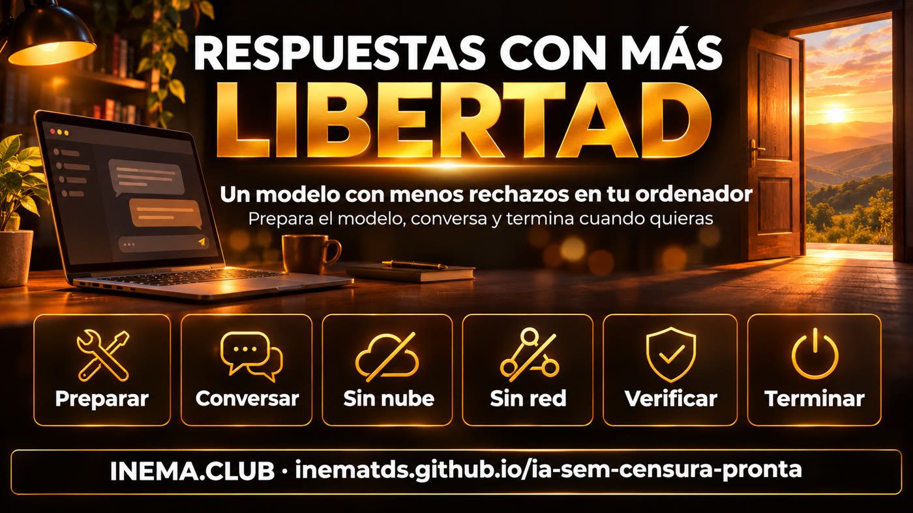

Prepara
El kit comprueba el runtime Ollama y descarga los pesos, que son los archivos del modelo. Esta preparación necesita internet.
El kit IA sin censura lista ya define el modelo con menos rechazos y cómo ejecutarlo. Descargas los pesos, abres la conversación y controlas cuándo termina el proceso.
Este kit gratuito ejecuta un modelo publicado como abliterated: una versión modificada para tener menos rechazos. Sirve para quienes quieren probar este tipo de modelo en funcionamiento, con conversación y lectura de texto. El modelo se ejecuta en la máquina donde se instala el kit, sin una API externa de inferencia. Necesitas Python, Ollama y suficiente memoria. Menos rechazos no garantiza que acepte todas las solicitudes ni que todas las respuestas sean correctas.

Audio en portugués. Demostración de los dos kits, con resultados reales y sus limitaciones. Ver en YouTube
El programa ejecuta el modelo, mantiene un contexto breve de conversación y muestra la respuesta en la terminal. La terminal es la ventana donde escribes comandos y lees el resultado.
El kit comprueba el runtime Ollama y descarga los pesos, que son los archivos del modelo. Esta preparación necesita internet.
Escribe tu pregunta o proporciona un archivo de texto. La respuesta se genera en la máquina donde está instalado el kit.
Al salir, el kit descarga su modelo de la memoria y cierra su propia instancia. No detiene Ollama de otros proyectos.
El kit es código ejecutable, con lanzador, perfil de modelo y una prueba real. No es una ficha de decisión. La conversación aparece en la terminal; esta versión no incluye una aplicación de chat en el navegador.
Se refiere a quién recibe los datos. El kit privado procesa en el ordenador y ofrece una ejecución Linux sin interfaz para salir a internet. El modelo todavía puede rechazar solicitudes.
Se refiere a las restricciones de respuesta. El kit usa una versión abliterated identificada por el nombre y el digest de los pesos. También se ejecuta localmente; menos rechazos no garantizan privacidad ni calidad.
Estás en IA sin censura lista. El otro kit está en Se ejecutó en Linux el 15/11/2026, con el modelo real, de uno en uno. Los modelos se descargaron de la memoria al terminar. Estos resultados corresponden a los casos descritos; no son una clasificación general. Además, las 14 pruebas de software pasaron. Comprueban el puerto ocupado, la ausencia del modelo, la nube, las redirecciones, las respuestas vacías y el ciclo de vida del proceso con un servidor simulado. La prueba con el modelo real se registra por separado. Un modelo con menos rechazos puede ejecutarse en tu ordenador, en un servidor propio o en un servicio externo. Quién ejecuta el modelo y qué restricciones tiene son decisiones distintas. En estos kits, el modelo se ejecuta en la máquina donde instalas el código. También puedes instalar el código en un servidor propio y usarlo desde la terminal por SSH, una conexión remota protegida. En ese caso, el contenido pasa a estar en ese servidor y hay que tener en cuenta la confianza en quien lo administra y los controles de acceso. Esta implementación en la nube no se probó en esta entrega. No hay integración lista con proveedores externos de inferencia. La configuración mantiene el servicio vinculado a la dirección local de la propia máquina. El sitio público es solo la guía; esta página no envía tus preguntas. No necesitas esta parte para entender lo anterior. Modelo predeterminado: huihui_ai/Qwen3.8-abliterated:27b. Pesos de aproximadamente 18 GB; se recomiendan 32 GB de RAM. La memoria de trabajo supera el tamaño de los pesos y depende del runtime. La conversación tiene un contexto breve de 2048 unidades de texto, llamadas tokens. No hay dependencias adicionales de Python. Runtime es el programa que ejecuta el modelo; aquí es Ollama. Digest es la identificación exacta de los archivos del modelo, que se usa para detectar un cambio de versión. Abliterated es una versión modificada para reducir las negativas. Espacio de nombres de red es la función de Linux que da al proceso su propia red separada. Si el modo sin conexión muestra un error de permisos, tu Linux no habilitó esta función: usa el modo local normal, sin afirmar que hubo aislamiento, o pide al administrador que habilite los espacios de nombres de usuario. Instala Python 3.10 o superior, Ollama y, para clonar, Git. También puedes descargar el ZIP y extraer la carpeta, sin Git. En Windows, marca la opción para añadir Python al PATH, que permite invocarlo desde la terminal. Después de instalar, abre una terminal nueva. En Windows, si hace falta, sustituye python3 por py. En Ubuntu, puedes instalar Python y Git con: Con Git: usa este método si instalaste Git. Descargué el ZIP: extrae el archivo. En Windows, abre la carpeta que contiene ia.py, haz clic en la barra de direcciones, escribe powershell y presiona Enter. En Linux/macOS, abre Terminal y entra en la carpeta extraída con cd; si guardaste el ZIP en Downloads, usa el ejemplo de abajo. Si lo guardaste en otro lugar, ajusta solo la ruta de la carpeta. En Windows, una vez dentro de la carpeta en PowerShell, ejecuta solo los dos comandos de Python, usando py si es necesario. También puedes abrir preparar.cmd y luego conversar.cmd con doble clic. No ejecutes git clone si elegiste el ZIP. La preparación descarga o verifica los archivos del modelo. Si cambia la identificación de los pesos, el kit muestra el digest esperado y el encontrado. Comprueba el modelo en la página oficial de la etiqueta; solo entonces, si decides aceptar la nueva versión, edita digest_esperado en perfil.json con la identificación encontrada. Si no puedes confirmar el cambio, conserva el valor y no continúes con los pesos diferentes. La prueba debe responder 42 a la suma 17 + 25. Durante la conversación, escribe /limpar para reiniciar el contexto y /sair para terminar. El kit mantiene en memoria unos pocos mensajes recientes y no guarda el historial. Prepara primero los pesos. El ordenador sigue conectado para los demás programas; solo se aísla la red del kit. Este modo requiere que el sistema permita los espacios de nombres de usuario. La red aislada solo contiene la interfaz local lo. Aísla la red, no los archivos. En macOS/Windows, usa el modo local normal y comprueba manualmente, sin Wi-Fi ni cable, después de preparar el modelo; esta entrega no se probó en esos sistemas. Las respuestas son texto; los comandos que sugiera la IA no se ejecutan. Para documentos largos, envía fragmentos más pequeños. Para cálculos, compara con una referencia externa. No garantiza respuestas correctas ni que acepte cualquier solicitud. La protección de este flujo no cubre malware, administradores del ordenador, grabaciones de pantalla, copias de seguridad ni componentes comprometidos. La instalación no incluye interfaz gráfica, voz ni agentes que ejecuten herramientas. El código y los mensajes del kit están en portugués.Qué ocurrió en la prueba real
EjecuciónEl modelo real respondió sin red externaEl proceso solo tenía la interfaz de red local lo.Suma breve17 + 25 → 42La verificación ejecutable recibió la respuesta esperada.ConversaciónRecordó LARANJAEl modelo recuperó la palabra clave en un segundo mensaje.DocumentoRespuesta: 1000 / esperado: 1000El modelo acertó este ejercicio ficticio. Un caso correcto no mide toda la capacidad del modelo.CierreModelo descargado de la memoria y proceso cerradoEl puerto de la instancia propia se cerró después de la prueba.¿Tiene que estar en tu ordenador?
El kit: instalar y conversar
De la descarga a la primera respuesta
Términos técnicos
1
Prepara el ordenador
python3 --version
ollama --version
sudo apt update
sudo apt install python3 git
2Descarga el kit y los pesos
git clone https://github.com/linnoff88-dev/ia-sem-censura-pronta.git
cd ia-sem-censura-pronta
python3 ia.py diagnostico
python3 ia.py preparar
cd ~/Downloads/ia-sem-censura-pronta-main
python3 ia.py diagnostico
python3 ia.py preparar
3
Verifica y abre la conversación
python3 ia.py verificar
python3 ia.py conversar
4
Linux: bloquea la red del proceso
sudo apt install bubblewrap iproute2
bash sem-rede.sh verificar
bash sem-rede.sh conversar
5
Usa un archivo de texto
python3 ia.py perguntar --arquivo exemplos/primeiro-pedido.txt
Lo que el kit no promete